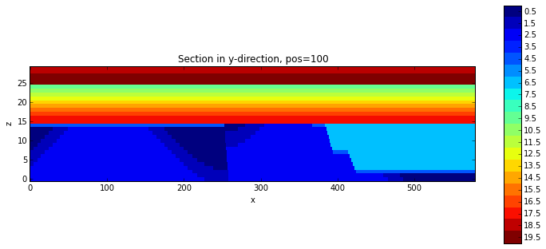
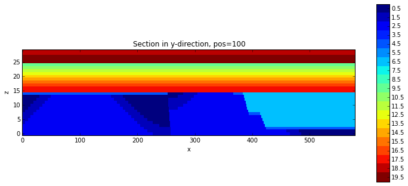

Kinematic model of the Gippsland Basin¶
We analyse here uncertainties in a kinematic model of the Gippsland Basin, Victoria. The model is built on the basis of a detailed analysis of the geological history and adjusted to observed structures in the area.
Here, we first evaluate the model and analyse the setting a little bit and then proceed to investigate how errors in the parameterised geological history (i.e. the parameters of the kinematic events) propagate into model uncertainties.
!pwd
/Users/flow/Documents/02_work/10_Geomodels/06_Noddy
from IPython.core.display import HTML
css_file = 'pynoddy.css'
HTML(open(css_file, "r").read())
---------------------------------------------------------------------------
IOError Traceback (most recent call last)
<ipython-input-11-64a794565859> in <module>()
1 from IPython.core.display import HTML
2 css_file = 'pynoddy.css'
----> 3 HTML(open(css_file, "r").read())
IOError: [Errno 2] No such file or directory: 'pynoddy.css'
%matplotlib inline
import sys, os
import matplotlib.pyplot as plt
import pynoddy.history
import pynoddy.output
import copy
import pickle
# os.chdir(r"/Users/Florian/Documents/10_Geomodels/Noddy/GBasin/GBasin")
os.chdir(r"/Users/flow/Documents/02_work/10_Geomodels/06_Noddy/")
Model analysis¶
First step: simple evaluation of the model structure for the new version of the model.
# the following reloads are only required during development phase
reload(pynoddy.history)
reload(pynoddy.events)
PH = pynoddy.history.NoddyHistory("GBasin_Ve1_V3.his")
STRATIGRAPHY
FOLD
UNCONFORMITY
FAULT
FAULT
UNCONFORMITY
FAULT
FAULT
UNCONFORMITY
FAULT
FOLD
UNCONFORMITY
# get some basic model information
print PH.get_extent()
print PH.get_origin()
(26630.0, 19291.0, 1500.0)
(0.0, 0.0, 1500.0)
# Let's have a look at the defined events
PH.events
{1: <pynoddy.events.Stratigraphy instance at 0x110258878>,
2: <pynoddy.events.Fold instance at 0x110258dd0>,
3: <pynoddy.events.Unconformity instance at 0x110258518>,
4: <pynoddy.events.Fault instance at 0x1102580e0>,
5: <pynoddy.events.Fault instance at 0x110258fc8>,
6: <pynoddy.events.Unconformity instance at 0x110258758>,
7: <pynoddy.events.Fault instance at 0x110258050>,
8: <pynoddy.events.Fault instance at 0x110258f38>,
9: <pynoddy.events.Unconformity instance at 0x110258830>,
10: <pynoddy.events.Fault instance at 0x1102584d0>,
11: <pynoddy.events.Fold instance at 0x110258b48>,
12: <pynoddy.events.Unconformity instance at 0x1102581b8>}
# Compute the model
reload(pynoddy)
his = 'GBasin_V3.his'
PH.write_history(his)
out = 'GBasin_V3_out'
pynoddy.compute_model(his, out)
print os.getcwd()
/Users/flow/Documents/02_work/10_Geomodels/06_Noddy
And now we visualise the output:
reload(pynoddy.output)
PO = pynoddy.output.NoddyOutput(out)
# create section plots in axes diretions:
PO.plot_section('x', ve = 5.)
PO.plot_section('y', position = 100, ve = 5.)
 

# Export to VTK for 3-D visualisation and analysis
PO.export_to_vtk(vtk_filename = "GBasin_V3")